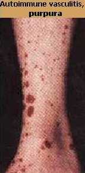

THE SEQUELS OF IMMUNE COMPLEX TISSUE DEPOSITION
Although IC circulate all over the body, they have several predilection sites of deposition. Thus, systemic IC process has maximal manifestations in these particular sites (Fig ). Once the clearance mechanisms of IC are insufficient, the endothelial fixation of IC, principally, may occur anywhere, but it is facilitated at the sites of high blood pressure, curled microcirculatory vessels, zones of significant shear stress, increased capillary permeability and turbulent blood flow. That’s why, the typical favored site for IC endothelial fixation and deposition are the following vascular regions:
- Kidney glomeruli
- Eye ciliary bodies
- Choroid plexus of IV ventricle’s bottom
- Arterial bifurcations and twisted portions
- Vasculature around joints and under serosal surface
- Heart valves’ cusps.
IC deposit easier within the tissues, containing the target antigen of their Ig (for example, in fungi alveolitis these are bronchi and lungs, in autoimmune hepatitis – liver, in glomerular basal membrane autoallergy - kidneys etc.). Due to this, if a doctor registers the symptoms of uveitis, glomerulonephritis, choroiditis, endocarditis, and polyserositis, arthritis, polyarteritis and other vasculitides – IC mechanism mast always be suggested.

Anyway, as soon as clearance of IC is systemically disturbed, the next step in development of IC disorder is always vasculitis of some location(s) and severity.
The pathological manifestations, provoked by IC sedimentation on inner vascular wall are explained by damaging action of mediators and cells of inflammation. Activation of complement and release of cytokines from the endotheliocytes, coated with IC, may cause the sharp increase of vascular permeability at the sites of IC deposition. The whole lag phase between provoking Ag penetration and first signs of IC vasculitis in acute systemic IC disease may be about 10 days. Several types of cell, first of all –macrophages, secrete into IC inflammation foci TNFa , which is so important for the whole chain of events, that antibodies to it can decrease greatly the intensity of experimentally induced IC process in animals.
The complement fragments (anaphylotoxins 1 and 2) may elicit the local mast cell and basophil degranulation, promoting edema and chemotaxis of polymorphonuclear leukocytes. The polymorphonuclear leukocytes, activated by TNFa and by other signals, produce and liberate via exocytosis free oxygen radicals and lytic enzymes, farther promoting tissue damage and vascular permeability increase. IC, complement and lysosomal enzymes activate coagulation cascade and kinins at the sites of vasculitis and in tissue, accepting the IC, crossing the vascular wall barrier. The results are microthrombi formation, ischemia, tissue necrosis and activation of platelets, which play in pathogenesis of IC mediated diseases very essential autonomous role. The platelets not only contribute into clotting, but also produce growth factors, responsible for cell proliferation, fibroplasia, angiogenesis peculiar to late stage of IC pathology. For example, proliferation component of membranoproliferative glomerulonephritis, mesangium changes in damaged glomeruli, glomerulosclerosis in Kimmelstiel – Wilson’ syndrome of IDDM – all is explained by these particular links of IC mechanism.
NEXT CHAPTER OR